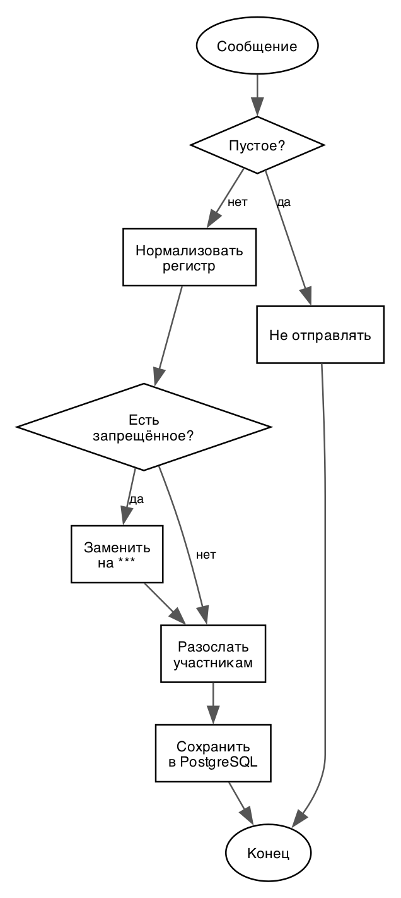
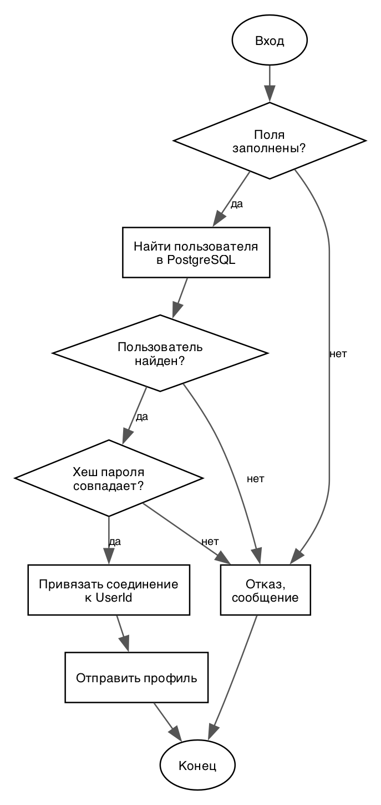

Схема алгоритма и программы
1. Перечень алгоритмов программы
В состав программы входят алгоритмы, обеспечивающие авторизацию, управление игровыми сессиями, обработку ходов, проверку победы, фильтрацию сообщений и подсчёт баллов. Перечень приведён в таблице 1.
Таблица 1 — Перечень основных алгоритмов
| № | Алгоритм | Назначение | Вход | Выход |
|---|---|---|---|---|
| A1 | Авторизация | Проверка учётных данных и привязка соединения | Логин, пароль | Профиль, идентификатор |
| A2 | Создание сессии | Создание комнаты и ожидание соперника | Идентификатор игрока | SessionId, статус |
| A3 | Подключение к сессии | Добавление второго игрока и запуск партии | SessionId, игрок | Активная сессия |
| A4 | Обработка хода | Валидация и применение хода к полю 25 × 25 | SessionId, координаты | Новое состояние поля |
| A5 | Проверка победы | Поиск пяти символов в ряд и ничьей | Поле, последний ход | Победитель или ничья |
| A6 | Фильтрация сообщений чата | Замена запрещённых слов | Текст сообщения | Отфильтрованный текст |
| A7 | Подсчёт баллов | Обновление статистики и итогового счёта | Результат партии | Баллы, запись в БД |
2. Разбор каждого алгоритма
2.1. Алгоритм авторизации
Алгоритм проверяет заполненность полей, ищет пользователя в PostgreSQL, сравнивает хеш пароля и привязывает текущее соединение к идентификатору пользователя.
ФУНКЦИЯ Login(login, password)
ЕСЛИ login = "" ИЛИ password = "": ОШИБКА "Заполните поля"
ЕСЛИ AuthThrottle.IsLocked(login): ОШИБКА "Слишком много попыток"
user = SELECT * FROM Users WHERE Login = login
ЕСЛИ user = NULL: ОШИБКА "Неверный логин или пароль"
ЕСЛИ user.IsBlocked: ОШИБКА "Неверный логин или пароль"
ЕСЛИ НЕ Verify(password, user.PasswordHash):
AuthThrottle.RecordFailure(login)
ОШИБКА "Неверный логин или пароль"
AuthThrottle.Reset(login)
connection.UserId = user.UserId
ВЕРНУТЬ LoadProfile(user.UserId)
2.2. Алгоритм создания сессии
Создаётся уникальный идентификатор комнаты, первый игрок назначается хостом, поле инициализируется пустыми клетками, статус — ожидание.
ФУНКЦИЯ CreateSession(userId)
ЕСЛИ userId НЕ авторизован: ОШИБКА
sessionId = INSERT INTO GameSessions
(PlayerXId, BoardState, CurrentTurn, Status)
VALUES (userId, EmptyBoardJson, 1, 'WaitingForOpponent')
RETURNING SessionId
session = { id: sessionId, playerX: userId,
playerO: NULL,
board: EmptyBoard(25, 25),
turn: X, status: WAITING }
sessions[sessionId] = session
ВЕРНУТЬ sessionId
2.3. Алгоритм подключения второго игрока
Сервер проверяет существование сессии, её свободность и статус, добавляет второго игрока, назначает символы X и O и переводит сессию в активное состояние.
ФУНКЦИЯ JoinSession(sessionId, userId)
session = sessions[sessionId]
ЕСЛИ session = NULL: ОШИБКА "Сессия не найдена"
ЕСЛИ session.playerO <> NULL: ОШИБКА "Сессия заполнена"
updated = UPDATE GameSessions
SET PlayerOId = userId, Status = 'Active'
WHERE SessionId = sessionId
AND Status = 'WaitingForOpponent'
AND PlayerOId IS NULL
ЕСЛИ updated = 0: ОШИБКА "Сессия уже заполнена"
session.playerO = userId
session.status = ACTIVE
session.turn = X
Broadcast(session, "start")
ВЕРНУТЬ session
2.4. Алгоритм обработки хода
Алгоритм проверяет сессию, участника, очередь, диапазон координат 0–24 и свободность клетки, записывает символ, проверяет завершение партии и рассылает состояние.
ФУНКЦИЯ MakeMove(sessionId, userId, row, col)
session = sessions[sessionId]
ЕСЛИ session = NULL ИЛИ session.status <> ACTIVE: ОШИБКА "Партия завершена"
ЕСЛИ userId НЕ В session.players: ОШИБКА "Вы не участник сессии"
symbol = session.symbols[userId]
ЕСЛИ session.turn <> symbol: ОШИБКА "Сейчас ход другого игрока"
ЕСЛИ row < 0 ИЛИ row > 24 ИЛИ col < 0 ИЛИ col > 24:
ОШИБКА "Координаты вне диапазона"
ЕСЛИ session.board[row][col] <> EMPTY: ОШИБКА "Клетка уже занята"
session.board[row][col] = symbol
ЕСЛИ CheckWin(session, row, col, symbol):
FinishGame(session, symbol)
ИНАЧЕ ЕСЛИ IsFull(session.board):
FinishGame(session, DRAW)
ИНАЧЕ:
session.turn = (O ЕСЛИ symbol = X ИНАЧЕ X)
UPDATE GameSessions
SET BoardState = BoardToJson(session.board),
CurrentTurn = session.turn, Status = 'Active'
WHERE SessionId = sessionId AND Status = 'Active'
Broadcast(session, "state")
ВЕРНУТЬ OK
2.5. Алгоритм определения победителя
Проверка выполняется вокруг последнего хода по четырём направлениям. Счётчик увеличивается, пока соседние клетки содержат тот же символ; при достижении пяти фиксируется победа.
ФУНКЦИЯ CheckWin(session, row, col, symbol)
ДЛЯ (dr, dc) В [(0,1), (1,0), (1,1), (1,-1)]:
count = 1
count += Count(row, col, dr, dc, symbol)
count += Count(row, col, -dr, -dc, symbol)
ЕСЛИ count >= 5: ВЕРНУТЬ TRUE
ВЕРНУТЬ FALSE
ФУНКЦИЯ Count(row, col, dr, dc, symbol)
n = 0
r = row + dr; c = col + dc
ПОКА ВНУТРИ_ПОЛЯ(r, c) И board[r][c] = symbol:
n = n + 1; r = r + dr; c = c + dc
ВЕРНУТЬ n
2.6. Алгоритм обработки сообщений чата и фильтрации
Текст сообщения чата проверяется регистронезависимо, для каждого слова словаря строится шаблон с разделителями и похожими символами, найденные фрагменты заменяются на «***», после чего сообщение рассылается и сохраняется.
ФУНКЦИЯ Filter(text)
ЕСЛИ Trim(text) = "": ВЕРНУТЬ NULL
ДЛЯ каждого word В Dictionary:
pattern = BuildPattern(word)
text = RegexReplace(text, pattern, "***")
ВЕРНУТЬ text
ФУНКЦИЯ BuildPattern(word)
pattern = ""
ДЛЯ каждого символа c В word:
ЕСЛИ pattern <> "": pattern = pattern + "[\s\p{P}\p{S}]*"
pattern = pattern + CharacterClass(c) // похожие буквы и цифры
ВЕРНУТЬ pattern
2.7. Алгоритм подсчёта баллов
После завершения партии результат и статистика обновляются в одной транзакции PostgreSQL. Победа даёт 3 балла, ничья — 1, поражение — 0.
ФУНКЦИЯ FinishGame(session, winnerSymbol)
ЕСЛИ winnerSymbol = X:
bonusX = 3; bonusO = 0; winnerId = session.playerX
ИНАЧЕ ЕСЛИ winnerSymbol = O:
bonusX = 0; bonusO = 3; winnerId = session.playerO
ИНАЧЕ:
bonusX = 1; bonusO = 1; winnerId = NULL
BEGIN TRANSACTION
inserted = INSERT INTO GameResults
(SessionId, WinnerId, ResultType)
VALUES (session.id, winnerId,
CASE WHEN winnerId IS NULL THEN 'Draw' ELSE 'Win' END)
ON CONFLICT (SessionId) DO NOTHING
RETURNING ResultId
ЕСЛИ inserted <> NULL:
UPDATE UserProfiles
SET GamesPlayed = GamesPlayed + 1,
Wins = Wins +
(CASE WHEN winnerId = session.playerX THEN 1 ELSE 0 END),
Losses = Losses +
(CASE WHEN winnerId = session.playerO THEN 1 ELSE 0 END),
TotalScore = TotalScore + bonusX
WHERE UserId = session.playerX
UPDATE UserProfiles
SET GamesPlayed = GamesPlayed + 1,
Wins = Wins +
(CASE WHEN winnerId = session.playerO THEN 1 ELSE 0 END),
Losses = Losses +
(CASE WHEN winnerId = session.playerX THEN 1 ELSE 0 END),
TotalScore = TotalScore + bonusO
WHERE UserId = session.playerO
UPDATE GameSessions
SET BoardState = BoardToJson(session.board),
Status = 'Finished', FinishedAt = NOW()
WHERE SessionId = session.id
COMMIT
SendResult(session, bonusX, bonusO)
3. Создание блок-схем для ключевых алгоритмов
3.1. Создание сессии
Алгоритм отвечает за создание изолированной игровой сессии и является ключевым, потому что с него начинается любая партия. Переменные алгоритма приведены в таблице 2.
Таблица 2 — Переменные алгоритма создания сессии
| Имя | Тип | Область видимости | Назначение |
|---|---|---|---|
| sessionId | int | объект session | Уникальный номер сессии |
| playerX, playerO | int | объект session | Идентификаторы игроков |
| board | int[25,25] | объект session | Состояние поля: 0, 1, 2 |
| turn | int | объект session | Очередь: 1 — X, 2 — O |
| status | enum | объект session | Статус сессии |
Схема приведена на рисунке 1.

Рисунок 1 — Алгоритм создания сессии
3.2. Подключение второго игрока
Алгоритм проверяет существование и свободность сессии, фиксирует второго игрока в GameSessions и переводит сессию в Active. Блок-схема приведена на рисунке 2.

Рисунок 2 — Алгоритм подключения второго игрока
3.3. Обработка хода
Алгоритм проверяет допустимость хода и синхронизирует состояние поля. Переменные алгоритмов хода и проверки победы приведены в таблице 3.
Таблица 3 — Переменные алгоритмов хода и проверки победы
| Имя | Тип | Область видимости | Назначение |
|---|---|---|---|
| sessionId | int | локальная | Идентификатор игровой сессии |
| userId | int | локальная | Идентификатор игрока |
| row, col | int | локальная | Координаты клетки (0–24) |
| symbol | int | локальная | Символ: 1 — X, 2 — O |
| dr, dc | int | локальная | Направление проверки |
| count | int | локальная | Количество символов подряд |
| session | GameSession | локальная | Состояние партии |
Схема приведена на рисунке 3.

Рисунок 3 — Алгоритм обработки хода и синхронизации
3.4. Проверка победы и ничьей
Алгоритм определяет завершение партии по пяти символам в ряд или по заполнению поля. Блок-схема приведена на рисунке 4.

Рисунок 4 — Алгоритм проверки победы и ничьей
3.5. Фильтрация сообщений чата
Алгоритм заменяет запрещённые выражения с учётом разделителей и похожих символов. Переменные приведены в таблице 4.
Таблица 4 — Переменные алгоритма фильтрации
| Имя | Тип | Область видимости | Назначение |
|---|---|---|---|
| text | string | локальная | Исходный текст сообщения |
| pattern | string | локальная | Шаблон поиска с разделителями |
| word | string | локальная | Очередное слово словаря |
| dictionary | string[] | глобальная | Словарь запрещённых слов |
Схема приведена на рисунке 5.

Рисунок 5 — Алгоритм обработки и фильтрации сообщений
3.6. Авторизация
Алгоритм проверяет учётные данные, блокировку и лимит попыток, после чего привязывает соединение к пользователю. Блок-схема приведена на рисунке 6.

Рисунок 6 — Алгоритм авторизации
4. Заключение
Схемы алгоритмов оформлены с учётом ГОСТ 19.701-90: используются блоки «начало/конец», «процесс», «решение», «данные» и «документ». Линии потока направлены сверху вниз или слева направо; каждое ветвление подписано «да» или «нет». Подписи рисунков размещены под изображениями.
Псевдокод приведён для однозначного понимания логики и не зависит от конкретного языка реализации. Имена переменных совпадают с именами в пояснительной записке и описании программы.